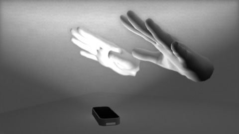

Hello World¶
This article demonstrates how to connect to the Leap Motion controller and access basic tracking data. After reading this article and following along with your own basic program, you should have a solid foundation for beginning your own application development.
First, a little background...
How the Leap Motion Controller Works¶
The Leap Motion controller encompasses both hardware and software components.
The Leap Motion hardware consists primarily of a pair of stereo infrared cameras and illumination LEDs. The camera sensors look upward (when the device is in its standard orientation). The following illustration shows how a user’s hands look from the perspective of the Leap Motion sensor:
The Leap Motion software receives the sensor data and analyzes this data specifically for hands, fingers, and arms. The software maintains an internal model of the human hand and compares that model to the sensor data to determine the best fit. Sensor data is analyzed frame-by-frame and the service sends each frame of data to Leap Motion-enabled applications. The Frame object received by your application contains all the known positions, velocities and identities of tracked entities, such as hands and fingers. For an overview for the tracking data provided by the controller, read API Overview.
The Leap Motion software runs as a service (Windows) or daemon (Mac and Linux) on the client computer. Native Leap Motion-enabled applications can connect to this service using the API provide by the Leap Motion dynamic libraries (provided as part of the Leap Motion SDK). Web applications can connect to a WebSocket server hosted by the service. The WebSocket provides tracking data as a JSON-formatted message – one message per frame of data. A JavaScript library, LeapJS, provides an API wrapping this data. For more information read System Architecture.
Set Up the Files¶
This tutorial uses command line compilers and linkers (where needed) in order to focus on the code rather than the environment. For details on how to set up projects using the Leap Motion SDK in popular IDEs, see Setting Up a Project.
- If you haven’t already, download and unzip the latest Leap Motion SDK from the developer site and install the latest Leap Motion service.
- Open a terminal or console window and navigate to the SDK samples folder.
- Sample.cs contains the finished code for this tutorial, but to get the most out of this lesson, you can rename the existing file, and create a new, blank Sample.cs file in this folder. (Keep the existing file for reference.)
- In your new Sample.cs file, add the Leap namespace to reference the Leap Motion classes:
using Leap;
- Add the “structural” code to define a command-line program:
class Sample { public static void Main () { // Keep this process running until Enter is pressed Console.WriteLine ("Press Enter to quit..."); Console.ReadLine (); } }
This code simply prints a message and then waits for keyboard input before exiting. See Running the Sample for instructions on running the program.
Get Connected¶
The next step is to add a Controller object to the program – which serves as our connection to the Leap Motion service/daemon.
class Sample
{
public static void Main ()
{
Controller controller = new Controller ();
// Keep this process running until Enter is pressed
Console.WriteLine ("Press Enter to quit...");
Console.ReadLine ();
}
}
When you create a Controller object, it automatically connects to the Leap Motion service and, once the connection has been established, you can get tracking data from it using the Controller.Frame() method.
Subscribe to Events¶
The Controller object dispatches a number of events that you can use to get tracking data. These events include Connect, Device, and FrameReady. A Connect event is dispatched when your application has successfully connected to the Leap Motion service. A Device event is dispatched when a Leap Motion device becomes available – this could be immediately after Connect or when you plug in a device. FrameReady is dispatched when a new tracking frame is available.
To continue this tutorial, add the SampleListener class to your program to define the event handler functions:
class SampleListener
{
public void OnServiceConnect(object sender, ConnectionEventArgs args)
{
Console.WriteLine("Service Connected");
}
public void OnConnect(object sender, DeviceEventArgs args)
{
Console.WriteLine("Connected");
}
public void OnFrame(object sender, FrameEventArgs args)
{
Console.WriteLine("Frame Available.");
}
}
If you have already taken a look at the finished file, you may have noticed that several more callback functions are present and more data is printed out. For simplicity, these are omitted here, but you should examine the Sample.cs that came with the SDK.
Now create a SampleListener object in the Main function using your new class and add hook up the event handlers:
class Sample
{
public static void Main ()
{
Controller controller = new Controller ();
SampleListener listener = new SampleListener();
controller.Connect += listener.OnServiceConnect;
controller.Device += listener.OnConnect;
controller.FrameReady += listener.OnFrame;
// Keep this process running until Enter is pressed
Console.WriteLine ("Press Enter to quit...");
Console.ReadLine ();
controller.RemoveListener (listener);
controller.Dispose ();
}
}
Now is a good time to test your sample program. Follow the directions in: Running the Sample.
If everything is correct (and your Leap Motion hardware is plugged in), then you should see the strings “Service Connected” and “Connected” printed to the terminal window followed by an rapid series of “Frame Available.”. If things go wrong and you cannot figure out why, you can get help on our developer forum at developer.leapmotion.com.
Whenever you run into trouble developing a Leap Motion application, try opening the diagnostic visualizer. This program displays a visualization of the Leap Motion tracking data. You can compare what you see in your program to what you see in the visualizer (which uses the same API) to isolate and identify many problems.
Connect and Device Events¶
When your Controller object successfully connects to the Leap Motion service/daemon it dispatches the Connect event – however, the device will not be streaming data yet. When the Leap Motion hardware is plugged in, the Device event is dispatched.
FrameReady Events¶
The tracking data in the Leap Motion system arrives in the form of Frame objects. You can get Frame objects from your controller (after it has connected and a device is streaming) by calling the Controller.Frame() method. Any event handlers subscribed to the FrameReady event . When you aren’t using a listener, you can compare the Id value to that of the last frame you processed to see if there is a new frame. Note that by setting the history parameter of the Frame() function, you can get earlier frames than the current one (up to 60 frames are stored). Thus, even when polling at a slower rate than the Leap Motion frame rate, you can process every frame, if desired.
To get the frame, add this call to Frame() to your OnFrame callback:
Then, print out some properties of the Frame object:
public void OnFrame(object sender, FrameEventArgs args)
{
// Get the most recent frame and report some basic information
Frame frame = args.frame;
Console.WriteLine(
"Frame id: {0}, timestamp: {1}, hands: {2}",
frame.Id, frame.Timestamp, frame.Hands.Count
);
foreach (Hand hand in frame.Hands)
{
Console.WriteLine(" Hand id: {0}, palm position: {1}, fingers: {2}",
hand.Id, hand.PalmPosition, hand.Fingers.Count);
// Get the hand's normal vector and direction
Vector normal = hand.PalmNormal;
Vector direction = hand.Direction;
// Calculate the hand's pitch, roll, and yaw angles
Console.WriteLine(
" Hand pitch: {0} degrees, roll: {1} degrees, yaw: {2} degrees",
direction.Pitch * 180.0f / (float)Math.PI,
normal.Roll * 180.0f / (float)Math.PI,
direction.Yaw * 180.0f / (float)Math.PI
);
}
}
Run your sample again, put a hand or two over the Leap Motion device and you should now see the basic statistics of each frame printed to the console window.
I’ll end this tutorial here, but you can look at the rest of the code in the original sample program for examples on how to get all the Hand, Finger, Arm, and Bone objects in a frame.
Running the Sample¶
To run the sample application:
- Compile the sample application:
On Windows, open a Command Prompt and change to the SDK samples folder. Execute the following command:
csc /platform:x86 /target:exe Sample.cs ..\src\*.cs Sample.csOn Mac, open a Terminal window and change to the SDK samples folder. Execute the following command:
mcs /platform:x86 /target:exe ../src/*.cs Sample.cs
- Run the sample application:
On Windows, make sure that Sample.exe and LeapC.dll are in the current directory. Use the LeapC library in the lib\x86 directory for 32-bit projects. Use the one in the lib\x64 directory for 64-bit projects. Run the following command in a command-line prompt:
Sample.exeOn Mac, make sure that Sample.exe and libLeapC.dylib are in the current directory and run the following command in a terminal window:
mono Sample.exe